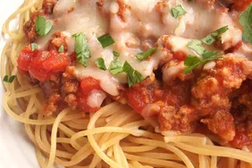

Spaghetti

Description
This easy spaghetti casserole dish with ground beef is deliciously rich, hearty, and cheesy.
Ingredients
Spaghetti
- 12-ounce package of spaghetti
- cream cheese and sour cream
- shredded part-skim mozzarella cheese and Parmesan cheese
- ground beef
- an onion
- fresh garlic, Italian seasoning, kosher salt, and black pepper
Steps
- Boil and drain the spaghetti.
- Cook the beef until lightly browned, then add onion and seasonings.
- Continue cooking until the meat is cooked through, then drain the grease.
- Stir the sauce into the beef mixture, then add the spaghetti and stir until coated in sauce.
- Assemble the spaghetti casserole according to the detailed instructions.
- Bake, covered with foil, for 30 minutes.
- Remove the foil, sprinkle with Parmesan, and broil until the cheese is golden brow.